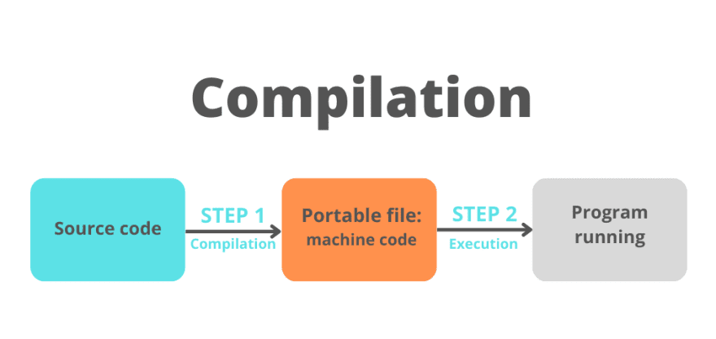
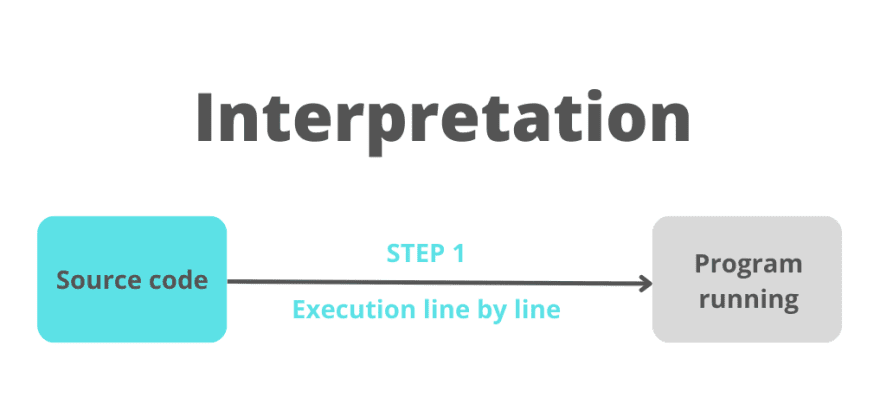

As mentioned previously, if the page requires a blocking script, it will be fetched and executed instantly, while the DOM tree construction is paused, else the script will be fetched & executed after the DOM tree construction is completed.
Regardless of when the script is executed, it will be handled by the JavaScript engine which, like the browser engine, varies from browser to browser.
Compilation

Interpretation

JIT compilation
JavaScript engine uses a hybrid approach called JIT (Just in Time) compilation.
JIT stands for Just In Time, meaning, unlike with a compiled language, such as C, where the compilation is done ahead of time (in other words, before the actual execution of the code), with JavaScript, the compilation is done during execution